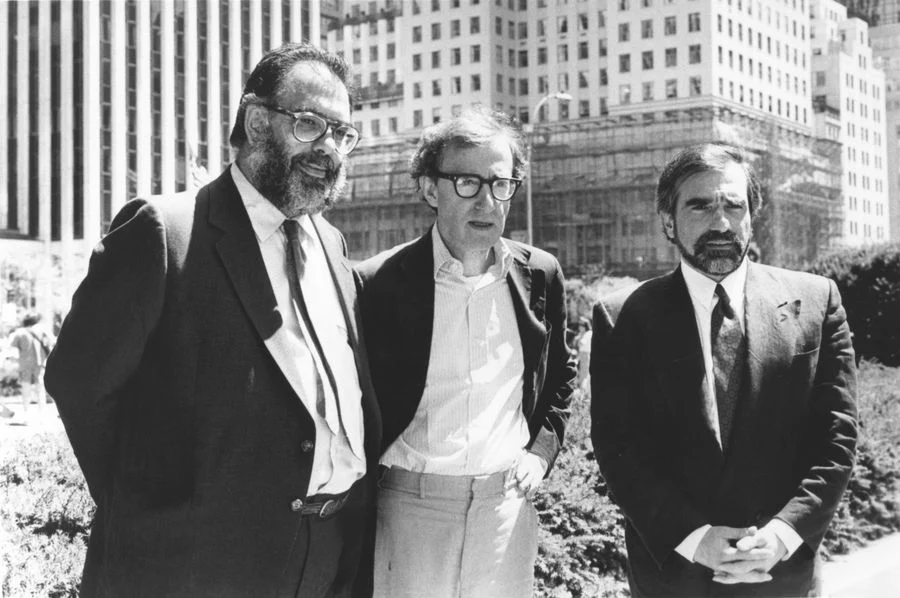
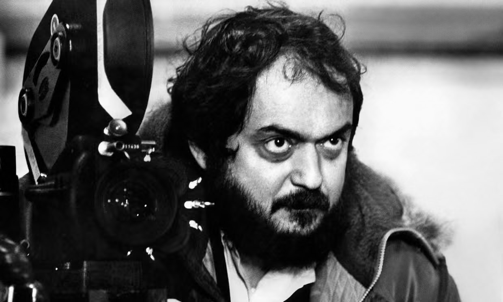

Stanley Kubrick beginnings
New Hollywood

The New Hollywood, Hollywood Renaissance, or American New Wave, was a movement in American film history from the mid-1960s to the early 1980s, when a new generation of filmmakers came to prominence. They influenced the types of film produced, their production and marketing, and the way major studios approached filmmaking. In New Hollywood films, the film director, rather than the studio, took on a key authorial role.
INFLUENCE ON OTHER FILMMAKERS

Numerous leading directors, including David Fincher, Christopher Nolan, Gaspar Noé, Michael Mann, Lars von Trier, and George A. Romero, have cited Kubrick as a source of inspiration, and in the case of Spielberg, collaboration. In an interview for the Eyes Wide Shut DVD release, Steven Spielberg comments that "nobody could shoot a picture better in history", and that Kubrick told stories in a way "antithetical to the way we are accustomed to receiving stories". Writing in the introduction to a recent edition of Michel Ciment's Kubrick, film director Martin Scorsese notes most of Kubrick's films were misunderstood and under-appreciated when first released, only to be considered masterpieces later on. Many filmmakers imitate Kubrick's inventive and unique use of camera movement and framing. For example, several of Jonathan Glazer's music videos contain visual references to Kubrick. The Coen Brothers' Barton Fink, in which the hotel itself seems malevolent, contains a hotel hallway Steadicam shot as an homage to The Shining. The storytelling style of their Hudsucker Proxy was influenced by Dr. Strangelove. Director Tim Burton has included a few visual homages to Kubrick in his work, notably using actual footage from 2001: A Space Odyssey in Charlie and the Chocolate Factory, and modeling the look of Tweedledee and Tweedledum in his version of Alice in Wonderland on the Grady girls in The Shining. Film critic Roger Ebert also noted that Burton's Mars Attacks! was partially inspired by Dr. Strangelove. The video for The Killers' song "Bones" that Burton directed includes clips from Kubrick's Lolita, as well as other films from the general era. Satyajit Ray, an Indian film director and screenwriter, greatly admired the works of Stanley Kubrick, calling him a great technician. In his words: 'I am fascinated by what he does all the time because he is a superb technician, not that his subject matter greatly appealed to me.' Kubrick's influence on Todd Field was perhaps the most direct. After acting in Kubrick's Eyes Wide Shut, Field immediately went on to make In the Bedroom.
TECHNIQUES
Stanley Kubrick’s distinctive visual style was deeply rooted in his background as a photojournalist and his obsession with equipment. Rather than renting studio gear, Kubrick preferred to own and heavily customize his own equipment—making unique pairings between industry-staple Mitchell cameras and Cooke lenses. This hands-on, inventor-like approach allowed him to master specific aesthetic techniques, most notably his signature precise zoom shots and pioneering methods for capturing scenes using only natural light.